Generating NEB Simulations
This section will guide you setting up, running, and viewing the results of an NEB simulation. For this, the basic steps are:
- Import Structure
- Prepare Structure
- Generate Migration Paths
- Generate NEB Simulations
- Run the NEB Simulations
- Viewing Computed Barriers
Danger
Depending on what you set the "division count" to (see here), this may schedule a lot of jobs (one per division)! Make sure you are allowed to schedule that many jobs!
Note
This is designed for running on clusters that use the slurm job scheduler, and have LAMMPS installed.
Note
By this point, you should already have an annealed structure. More information on annealing structure can be found here.
1) Import Structure
Load your structure into the program:
 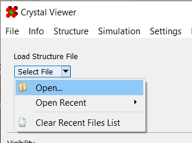
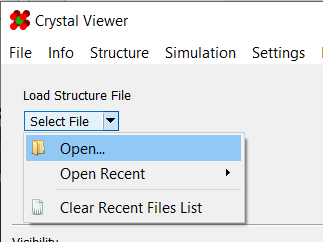
You should now see the structure in the viewport:

2) Prepare Structure
It is required to define a starting vacancy. To do so, use the "Mark as Starting Vacancy" tool found in the "Modify" section:
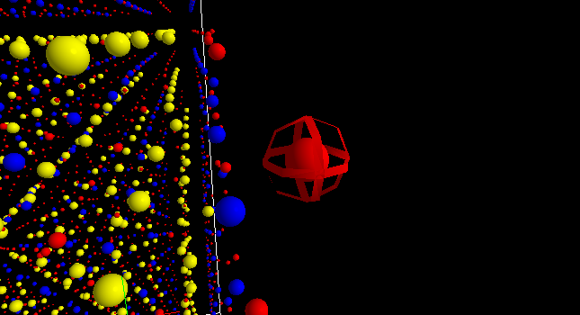
Additionally, you may wish to mark other atoms as vacancies, or dope atoms:
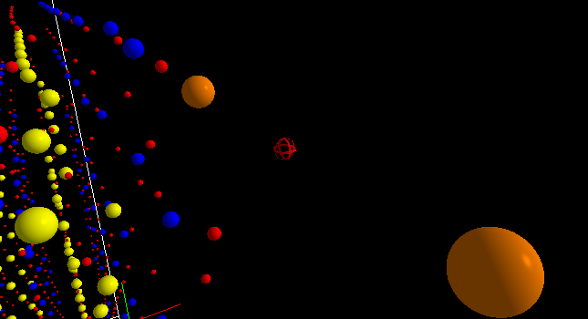
As always, more information on these tools can be found in their respective sections.
3) Generate Migration Paths
Go to the "Migration Paths" panel on the right side:
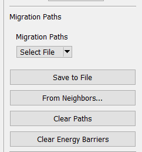
Here, you can either load the migration paths from a file, or you can generate new ones using a proximity-based system. To generate new ones, click on "From Neighbors..." to launch the "Paths From Neighbors" dialog:
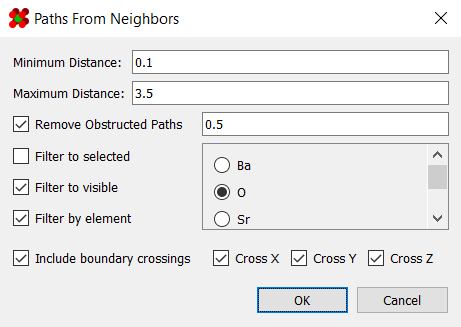
Enter the parameters that best fit your case. Additionally, several filters are available to determine which paths should be generated. A description of the fields can be found here.
Note that for large structures, it may take a few moments to generate the paths, especially if "Remove Obstructed Paths" is enabled. Once generated, they will, be present as white arrows in the viewport:
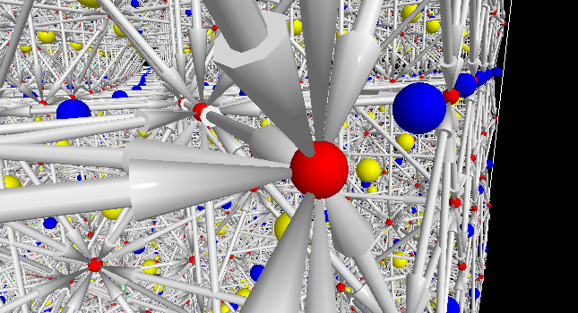
4) Generate NEB Simulations
Go to Simulation > Generate Simulation to launch the simulation
generator dialog:

Switch to the NEB simulation:
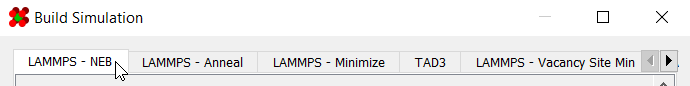
Enter parameters for your simulation. An explanation of all the fields can be found here. Once ready, click "Ok" to generate.
5) Run the NEB Simulations
Upload the resulting files to your cluster using the method of your choice (scp, FileZilla, etc.)
To run the simulation, navigate to the directory containing your simulation files and run the command:
sbatch slurm-mpi-main.sh
This will run the master job scheduling script. It will first run a pre-minimizer job if it detects one hasn't been run already. If it detects the pre-minimizer has been run (meaning you've run this script before), this step will be skipped. Generally, you will not need to worry about this preparation step.
The master job script will then schedule each division as a separate job. These jobs will first wait for the pre-minimizer to finish before running themselves.
Depending on how many paths you're simulating, it may take some
time for them to complete. Once finished, a final compilation
script will run automatically, compiling the
energy barriers
into a single table found in
/Compiled Energy Barriers/[NAME] Barriers.csv.
Finally, any paths that failed to run—whether due to convergence
issues or the cluster having a bad day—will be logged to
/Missing Barriers/Missing.csv. This can be loaded back into the
viewer as ordinary migration paths.
6) Viewing Computed Barriers
Once all jobs have finished, download the completed
barriers file
from /Compiled Energy Barriers/[NAME] Barriers.csv. Additionally,
any barriers that failed to compute—whether from failing to
converge or from job time limits—will be saved to
/Missing Barriers/Missing.csv. You may want to check/download this
file in case any such issues occurred.
Then, load your structure back in. For convenience, a template file
(named template.gz) was automatically added to the simulation
directory upon initial generation. That way, you can restore the
complete initial setup for reference.
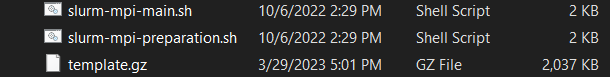
Next, load the energy barriers into the viewer using the "Migration Paths" panel.
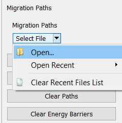
Now that your barriers are loaded in, it's possible that some of them didn't converge properly. This could skew the energy scale into entirely unreasonable territory:
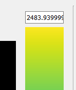
Fortunately, you can use the newly visible energy scale bar to adjust the limits of the range:
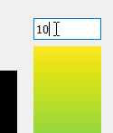
Additionally, you can toggle "Clip Energy Barriers" to hide any
barrier outside the energy range. This is found under
Structure > Clip Energy Barriers:
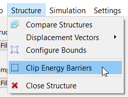